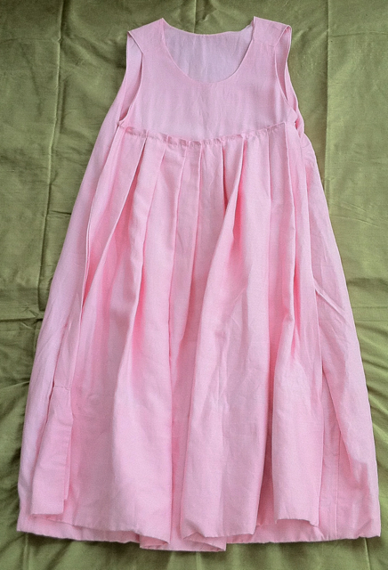

Pleated Apron Panel Dress
- Description: The Pleated Apron Panel Dress is a complex confectionery dress. It has the playful air of little girls' pinafore built on a very spare a-line dress. The naive pleated apron panel in front adds generous fabric to an otherwise very simple spare dress. Option to wear in reverse with pleated panel at back.
- Fabric: 100% Ramie Linen.
- Care: Machine wash cold, hang to dry, iron if needed.
- Price: $288
previous dress
next dress